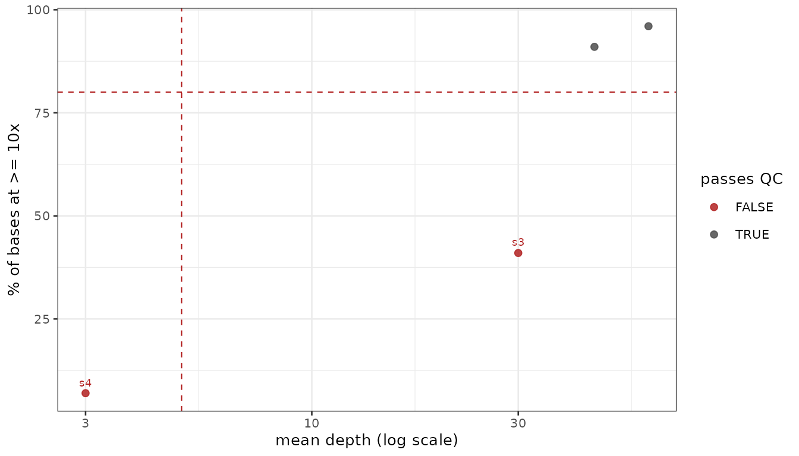

The depth tables come from the Python package
(plasgenomicsutils coverage_depth_stats and
coverage_dropout_regions, which read the BAMs); this
package reads and plots them.
cov <- read_coverage("coverage_by_sample.tsv.gz")
coverage_qc(cov, threshold = 10, min_mean = 5, min_breadth = 80) # one row per sample
plot_coverage_summary(cov) # mean vs breadth, failures labelled
plot_coverage_by_chrom(cov) # sample x chromosome, relative to each sample's own mean
plot_coverage_dropout(read_coverage("coverage_windows.tsv.gz"),
genes = PF_EXAMPLE_DRUG_GENES)Breadth matters more than mean depth: selective whole-genome
amplification can give a respectable average while leaving much of the
genome at zero, and only the pct_ge_10x-style column shows
that. On one real cohort the sample that failed QC had a mean of 122x —
and a median of 33x with a quarter of the core genome under 10x.
Two things to keep straight when generating those tables. The depth
engines do not agree by definition: mosdepth counts
fragments (an overlapping mate pair once) while
pysam/samtools depth count
reads, which puts mosdepth a couple of percent lower
everywhere. Fragment depth is the better measure of independent
evidence; either is fine as long as a cohort uses one, and the
engine column records which. And
plot_coverage_dropout() earns its place on the cross-sample
question — a window empty in everyone is not missing data, it
silently reads as invariant.
What the table looks like
The two floors are independent, and fail_reason says
which one a sample missed:
cov <- data.frame(
sample = paste0("s", 1:4), chrom = "genome",
mean = c(60, 45, 30, 3),
# s3 is deep on average but narrow -- amplification, not a shallow run
pct_ge_10x = c(96, 91, 41, 7)
)
coverage_qc(cov)
#> # A tibble: 4 × 5
#> sample mean pct_ge_10x pass fail_reason
#> <chr> <dbl> <dbl> <lgl> <chr>
#> 1 s4 3 7 FALSE low depth and breadth
#> 2 s3 30 41 FALSE low breadth
#> 3 s2 45 91 TRUE NA
#> 4 s1 60 96 TRUE NAplot_coverage_summary() draws the same two numbers
against each other with both floors marked, so the failures separate
along whichever axis they failed on – which is the quickest way to tell
a shallow run from an uneven one.
